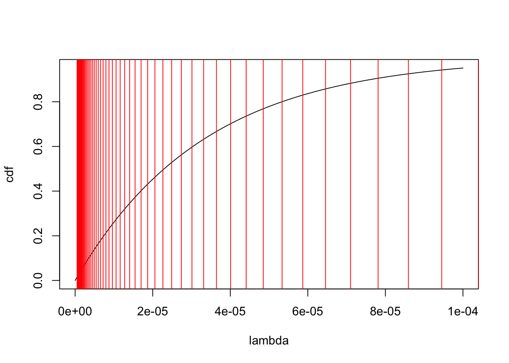

Last updated: 2019-10-05
Checks: 7 0
Knit directory: ebpmf_demo/
This reproducible R Markdown analysis was created with workflowr (version 1.4.0). The Checks tab describes the reproducibility checks that were applied when the results were created. The Past versions tab lists the development history.
Great! Since the R Markdown file has been committed to the Git repository, you know the exact version of the code that produced these results.
Great job! The global environment was empty. Objects defined in the global environment can affect the analysis in your R Markdown file in unknown ways. For reproduciblity it’s best to always run the code in an empty environment.
The command set.seed(20190923) was run prior to running the code in the R Markdown file. Setting a seed ensures that any results that rely on randomness, e.g. subsampling or permutations, are reproducible.
Great job! Recording the operating system, R version, and package versions is critical for reproducibility.
Nice! There were no cached chunks for this analysis, so you can be confident that you successfully produced the results during this run.
Great job! Using relative paths to the files within your workflowr project makes it easier to run your code on other machines.
Great! You are using Git for version control. Tracking code development and connecting the code version to the results is critical for reproducibility. The version displayed above was the version of the Git repository at the time these results were generated.
Note that you need to be careful to ensure that all relevant files for the analysis have been committed to Git prior to generating the results (you can use wflow_publish or wflow_git_commit). workflowr only checks the R Markdown file, but you know if there are other scripts or data files that it depends on. Below is the status of the Git repository when the results were generated:
Ignored files:
Ignored: .Rhistory
Ignored: .Rproj.user/
Untracked files:
Untracked: analysis/.ipynb_checkpoints/
Untracked: analysis/ebpmf_demo.Rmd
Untracked: analysis/softmax_experiments.ipynb
Untracked: data/pois-mode-est.Rds
Untracked: docs/figure/test.Rmd/
Unstaged changes:
Modified: analysis/softmax_experiments.Rmd
Note that any generated files, e.g. HTML, png, CSS, etc., are not included in this status report because it is ok for generated content to have uncommitted changes.
These are the previous versions of the R Markdown and HTML files. If you’ve configured a remote Git repository (see ?wflow_git_remote), click on the hyperlinks in the table below to view them.
| File | Version | Author | Date | Message |
|---|---|---|---|---|
| Rmd | b5df288 | zihao12 | 2019-10-05 | test pois_mode_est |
I copied from https://stephens999.github.io/misc/pois_mode_est.html. I fixed the bug that Matthew found and continued comparison. (ashr seems not to be updated in github so the result here isn’t as good as Matthew’s result)
The data is from https://users.rcc.uchicago.edu/~aksarkar/singlecell-modes/poisson.html#orga229ff0
Basically, the model is
\[ \begin{align} & x_i \sim Pois(s_i \lambda_i)\\ & \lambda_i \sim \delta_{\mu}(.)\\ \end{align} \] Then we have \(\hat{\mu} = \frac{\sum_i x_i}{\sum_i s_i}\). So we expect to see our fitted prior to be close to a point mass close to \(\hat{\mu}\).
Some results:
* loglikelihood: ebpm_point_gamma (-2008) > ashr_pois (-2097) > ebpm_exponential_mixture (-2350)
* Although ebpm_exponential_mixture puts all weight on one exponential distribution, whose mean is close to \(\hat{\mu}\), it does not look like a point mass due to the shape constraint of exponential (variance is not small enough).
library(ashr)
library(ebpm)d = readRDS("data/pois-mode-est.Rds")
print(sprintf("muhat: %5e", sum(d$x)/sum(d$s)))[1] "muhat: 3.370000e-05"hist(d$x)summary(d$s) Min. 1st Qu. Median Mean 3rd Qu. Max.
1e+05 1e+05 1e+05 1e+05 1e+05 1e+05 ashr_poisres.ash = ash_pois(d$x,d$s,link="identity")[1] "loglikelihood: -2097.005844"[1] "fitted g"$pi
[1] 1.000000e+00 2.952420e-15 7.385296e-16 1.847075e-16 4.619015e-17
[6] 1.154989e-17 2.887887e-18 7.220451e-19 1.805243e-19 4.513336e-20
[11] 1.128374e-20 2.821008e-21 7.052647e-22 1.763184e-22 4.408000e-23
[16] 1.102007e-23 2.755030e-24 6.887596e-25
$a
[1] 4.201626e-05 0.000000e+00 0.000000e+00 0.000000e+00 0.000000e+00
[6] 0.000000e+00 0.000000e+00 0.000000e+00 0.000000e+00 0.000000e+00
[11] 0.000000e+00 0.000000e+00 0.000000e+00 0.000000e+00 0.000000e+00
[16] 0.000000e+00 0.000000e+00 0.000000e+00
$b
[1] 4.201626e-05 8.562334e-02 1.210723e-01 1.712047e-01 2.421025e-01
[6] 3.423673e-01 4.841631e-01 6.846926e-01 9.682841e-01 1.369343e+00
[11] 1.936526e+00 2.738644e+00 3.873010e+00 5.477246e+00 7.745979e+00
[16] 1.095445e+01 1.549192e+01 2.190886e+01
attr(,"class")
[1] "unimix"
attr(,"row.names")
[1] 1 2 3 4 5 6 7 8 9 10 11 12 13 14 15 16 17 18ebpm_point_gamma:res.ebpm.point = ebpm::ebpm_point_gamma(d$x,d$s)[1] "loglikelihood: -2008.503700"[1] "fitted g"$pi
[1] 5.323739e-07
$a
[1] 131.1289
$b
[1] 3891064[1] "mean: a/b = 3.370001e-05"[1] "var a/b^2 = 8.660872e-12"ebpm_exponential_mixture:res.ebpm.mixture = ebpm::ebpm_exponential_mixture(d$x,d$s, m = 1.1)Below I show the cdf plots, with exponential means (selected grids) of the exponentials.
[1] "loglikelihood: -2350.570139"[1] "fitted g"$pi
[1] 9.457101e-16 1.034867e-15 1.140443e-15 1.266191e-15 1.416890e-15
[6] 1.598664e-15 1.819415e-15 2.089409e-15 2.422070e-15 2.835080e-15
[11] 3.351873e-15 4.003714e-15 4.832575e-15 5.895129e-15 7.268308e-15
[16] 9.057041e-15 1.140502e-14 1.450959e-14 1.864238e-14 2.417739e-14
[21] 3.162917e-14 4.170363e-14 5.536446e-14 7.391769e-14 9.911533e-14
[26] 1.332762e-13 1.794170e-13 2.413769e-13 3.239103e-13 4.327051e-13
[31] 5.742726e-13 7.556456e-13 9.838241e-13 1.264931e-12 1.603090e-12
[36] 1.999108e-12 2.449143e-12 2.943610e-12 3.466633e-12 3.996313e-12
[41] 4.505990e-12 4.966477e-12 5.349012e-12 5.628500e-12 1.000000e+00
[46] 5.813339e-12 5.709229e-12 5.483818e-12 5.154737e-12 4.745199e-12
[51] 4.281225e-12 3.788916e-12 3.292168e-12 2.811049e-12 2.360913e-12
[56] 1.952198e-12 1.590759e-12 1.278551e-12 1.014501e-12 7.953935e-13
[61] 6.166903e-13 4.732084e-13 3.596382e-13 2.709056e-13 2.023960e-13
$a
[1] 1 1 1 1 1 1 1 1 1 1 1 1 1 1 1 1 1 1 1 1 1 1 1 1 1 1 1 1 1 1 1 1 1 1 1
[36] 1 1 1 1 1 1 1 1 1 1 1 1 1 1 1 1 1 1 1 1 1 1 1 1 1 1 1 1 1 1
$b
[1] 2000000.000 1818181.818 1652892.562 1502629.602 1366026.911
[6] 1241842.646 1128947.860 1026316.236 933014.760 848195.237
[11] 771086.579 700987.799 637261.635 579328.759 526662.509
[16] 478784.099 435258.272 395689.338 359717.580 327015.982
[21] 297287.256 270261.142 245691.947 223356.316 203051.196
[26] 184591.996 167810.906 152555.369 138686.699 126078.817
[31] 114617.107 104197.370 94724.881 86113.529 78285.026
[36] 71168.205 64698.369 58816.699 53469.726 48608.842
[41] 44189.856 40172.597 36520.542 33200.493 30182.266
[46] 27438.424 24944.022 22676.384 20614.894 18740.813
[51] 17037.103 15488.275 14080.250 12800.227 11636.570
[56] 10578.700 9617.000 8742.727 7947.934 7225.395
[61] 6568.541 5971.401 5428.546 4935.042 4486.402[1] "max pi = 1.000000"[1] "mean for that exponential 3.313204e-05"[1] "variance for that exponential 1.097732e-09"
sessionInfo()R version 3.5.1 (2018-07-02)
Platform: x86_64-apple-darwin15.6.0 (64-bit)
Running under: macOS 10.14
Matrix products: default
BLAS: /Library/Frameworks/R.framework/Versions/3.5/Resources/lib/libRblas.0.dylib
LAPACK: /Library/Frameworks/R.framework/Versions/3.5/Resources/lib/libRlapack.dylib
locale:
[1] en_US.UTF-8/en_US.UTF-8/en_US.UTF-8/C/en_US.UTF-8/en_US.UTF-8
attached base packages:
[1] stats graphics grDevices utils datasets methods base
other attached packages:
[1] ebpm_0.0.0.9000 ashr_2.2-38
loaded via a namespace (and not attached):
[1] Rcpp_1.0.2 knitr_1.25 whisker_0.3-2
[4] magrittr_1.5 workflowr_1.4.0 MASS_7.3-51.4
[7] pscl_1.5.2 doParallel_1.0.15 SQUAREM_2017.10-1
[10] lattice_0.20-38 foreach_1.4.7 stringr_1.4.0
[13] tools_3.5.1 parallel_3.5.1 grid_3.5.1
[16] xfun_0.8 git2r_0.25.2 htmltools_0.3.6
[19] iterators_1.0.12 yaml_2.2.0 rprojroot_1.3-2
[22] digest_0.6.21 mixsqp_0.1-120 Matrix_1.2-17
[25] fs_1.3.1 codetools_0.2-16 glue_1.3.1
[28] evaluate_0.14 rmarkdown_1.13 stringi_1.4.3
[31] compiler_3.5.1 backports_1.1.5 truncnorm_1.0-8